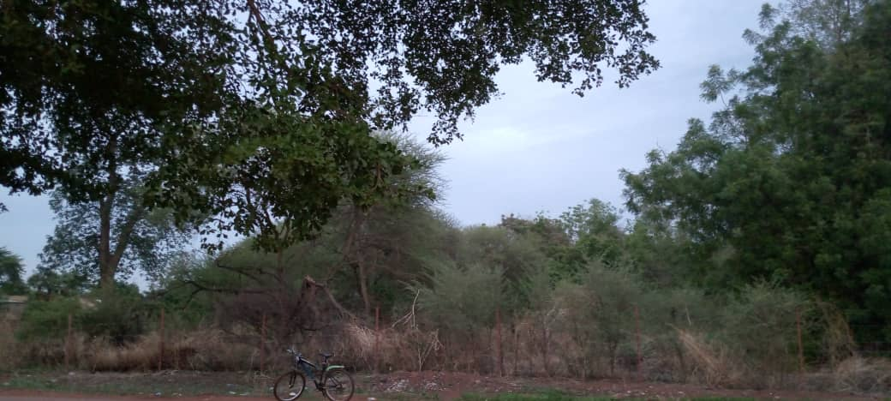
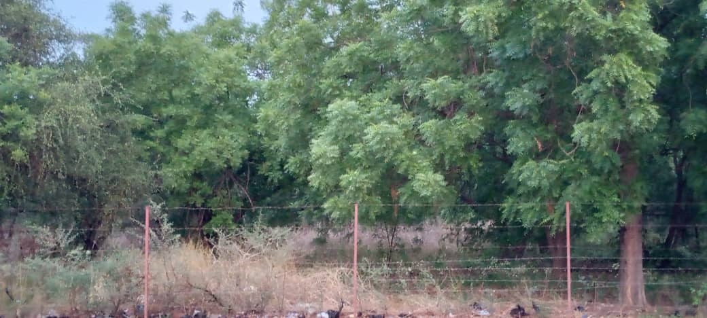
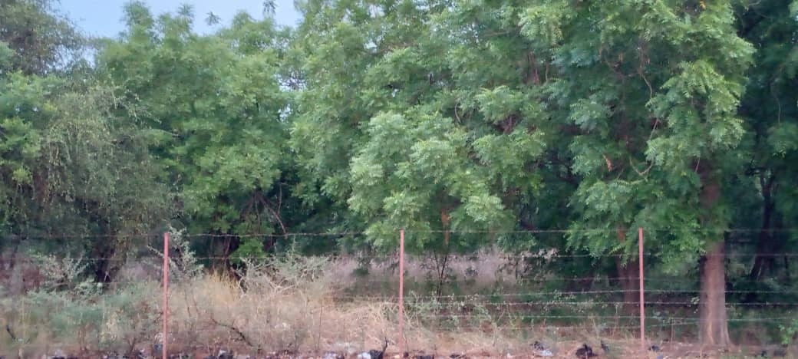
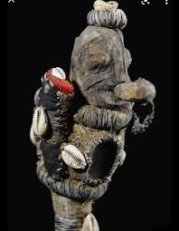
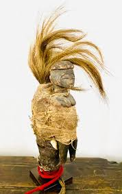

RICHESSES SACREES DES BWA
Le Puits sacrée
Avec des interdictions hors du commun dans le puits de la ville de Dedougou ,il fut à la l'origine de la fondation de la ville de Dedougou .Ce qui est bizzard avec ce puits c'est que meme le chef de Canton ne peut pas y avoir accès ; sauf une seule personne: Un Forgeron qui doit etre habillé en tenue d'Adam et Eve.
Quand un sacrifice fait au niveau du puits est rejété la chair de la poule sacrifiée devient Noir et ne conserve pas sa propre couleur


LE VARAN
Le VARAN est l'un des animaux le plus sacré des bwa chez les Bwa. Il est
strictement interdit de tuer cet animal. Et Quiconque tuera cet animal , verra la COLERE DES BWA et desTas de malheurs s'abbattre sur lui
Cet animal se trouve uniquement dans leur foret sacrée et dont l'accès est strictement interdit par qui que ce soit sauf eux, ou bien par autorisation de leur part qui necessitera des tas de sacrifices à faire d'abord.Avant de visiter ce coin consulter d'abord les bwa


LA FORET SACREE
Endroit dont l'accès et strictement interdit à la population non Bwa , cet endroit reste un mystère cachée et crée de la curiosité, des dévinettes. Il regorge en son sein les fétiches Bwa et les animaux sacrés des Bwa.l'aspect exterieur donne quand meme une vue magnifique

 

LES FETICHES
L'adoration des fétiches fait paries de la culture Bwa car cela leur permet de se connecterà leur dieux , de communiquer avec les manes des ancetres pour leur demander protection, les remercier ou ppour tout autre besoin de leur part.Cela se fait surtout a travers des sacrifices d'aniamux , du dolo.Ils sont aussi consultés lors de grande céremonies comme le FESTIMA.


LE LION
Symbole du courage et de la force le lion est aussi un animal sacré chez les Bwa